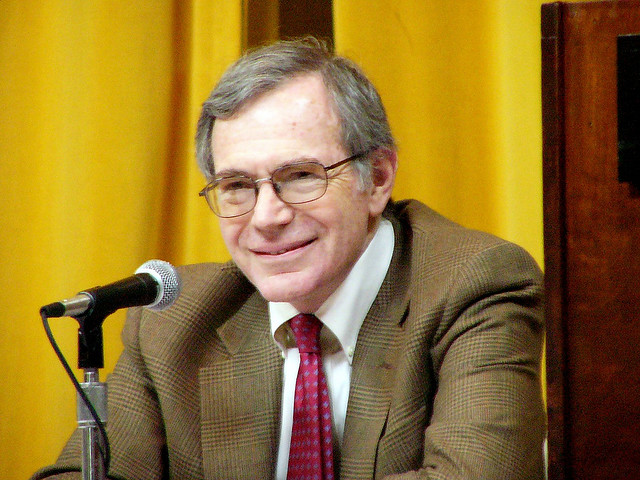
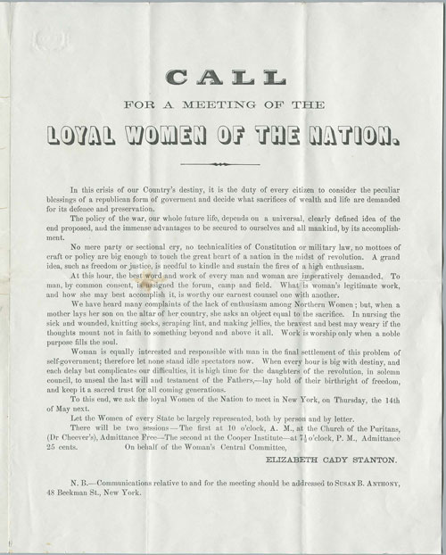
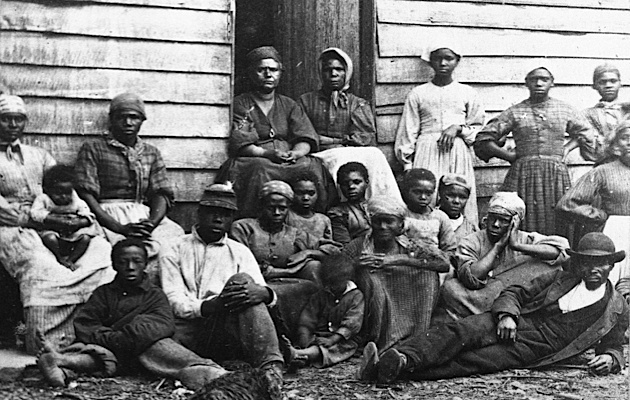

|
Daniel Day Lewis deserves the Oscar for best actor for his wonderful portrayal of Lincoln
in the new Steven Spielberg movie. But while the acting is great, there's a problem with
the film: it is dedicated to the proposition that Lincoln freed the slaves. Historians say
that's not quite right. The end of slavery did not come because Lincoln and the House of
Representatives voted for the Thirteenth Amendment.
The best work I know about the end of slavery is Eric Foner's unforgettable book The
|

Historian Eric Foner
|
Fiery Trial: Lincoln and American Slavery, published in 2010, which won the Pulitzer
Prize, the Bancroft Prize and the Lincoln Prize. Foner and many other historians over the
last couple of decades have emphasized the central role played by the slaves themselves,
who are virtually invisible in this movie. During the three weeks that the movie deals
with, Sherman's army was marching through South Carolina, where slaves were seizing
plantations. They were dividing up land among themselves. They were seizing their freedom.
Slavery was dying on the ground, not just in the House of Representatives. You get no
sense of that in the movie.
In the film Lincoln is dedicated to the great task of getting the House to ratify the
Thirteenth Amendment. But the film fails to note that Lincoln did not support the
Thirteenth Amendment when it was proposed in 1864--by the Women's National Loyal League,
led by Susan B. Anthony and Elizabeth Cady Stanton. Lincoln's view at that point, as Foner
shows, was that slavery should be abolished on a state-by-state basis, since slavery had
been created by state law. He changed his mind in response to political pressure from
Radical Republicans.
According to the film, Lincoln in 1865 was in "a race against time," because "peace may
come at any time, and if it comes before the amendment is passed, the returning southern
states will stop the amendment abolishing slavery before it can become law." That is
simply not true. The movie focuses on the lame duck Congress that met in January 1865. If
|

An announcement for a meeting of the Women's National Loyal League,
where a proposed anti-slavery amendment was discussed at length in 1864
|
it had failed to ratify the amendment, Lincoln had announced that he would call a special
session of the new Congress in March, where the Republicans would have a two-thirds
majority. It would have passed the amendment easily---slightly more than one month later
than the lame-duck Congress featured in the film.
The film makes another false argument, that once the Southern states were back in the
union, they would have the power to block the amendment's ratification, which required the
vote of three-quarters of the states. Lincoln and the rest of the Republicans were not
going to allow the Confederate state governments to remain in power after surrender---that
was what "Reconstruction" was all about. Louisiana, Tennessee and Virginia had already
formed new governments that abolished slavery. There was no "race against time"---and thus
the central drama of the film is bogus.
Another question raised by the film but not really answered is why the Emancipation
Proclamation, which Lincoln issued on January 1, 1863, did not free all slaves. Lincoln
knew that, under the Constitution, the president had no power to repeal laws passed by
states--including the laws making slavery legal in the South. But he did have the power as
commander-in-chief to take action in wartime that he deemed a "military necessity" to save
the government--in this case, undermining the Confederacy by declaring its slaves free and
recruiting them as Union soldiers. Thus the Emancipation Proclamation was a military
measure that applied only to slaves in areas under Confederate control. A half-million
slaves in the four border states and West Virginia remained enslaved. Lincoln believed
that once the "military necessity" had passed, legislation would be required to end
slavery permanently.
Abolitionist critics argued that the Emancipation Proclamation in fact freed no slaves
at all. But as Foner explains in The Fiery Trial, the proclamation "was as much a
|

Contraband (escaped) slaves in Virginia, 1863
|
political as a military document." Before the war Lincoln and many others had argued that
slavery should be ended by the states, gradually, and by compensating slaveholders. Now
his proclamation "addressed slaves directly, not as the property of the country's enemies
but as persons with wills of their own whose actions might help win the Civil War." Foner
emphasizes the point made by the Abolitionist Wendell Phillips, that the proclamation "did
not make emancipation a punishment for individual rebels, but treated slavery as 'a
system' that must be abolished."
"Never before had so large a number of slaves been declared free," Foner concludes. "By
making the army an agent of emancipation and wedding the goals of Union and abolition, it
ensured that Northern victory would produce a social transformation in the South and a
redefinition of the place of blacks in American life." All that is missing from
Spielberg's film.
It is altogether fitting and proper that this film honor Lincoln. But historians have
shown how slavery died as the result of the actions of former slaves. As Eric Foner
concludes, "That would be a dramatic story for Hollywood."
Source: Jon Wiener in The Nation blog (November 26, 2012).
|